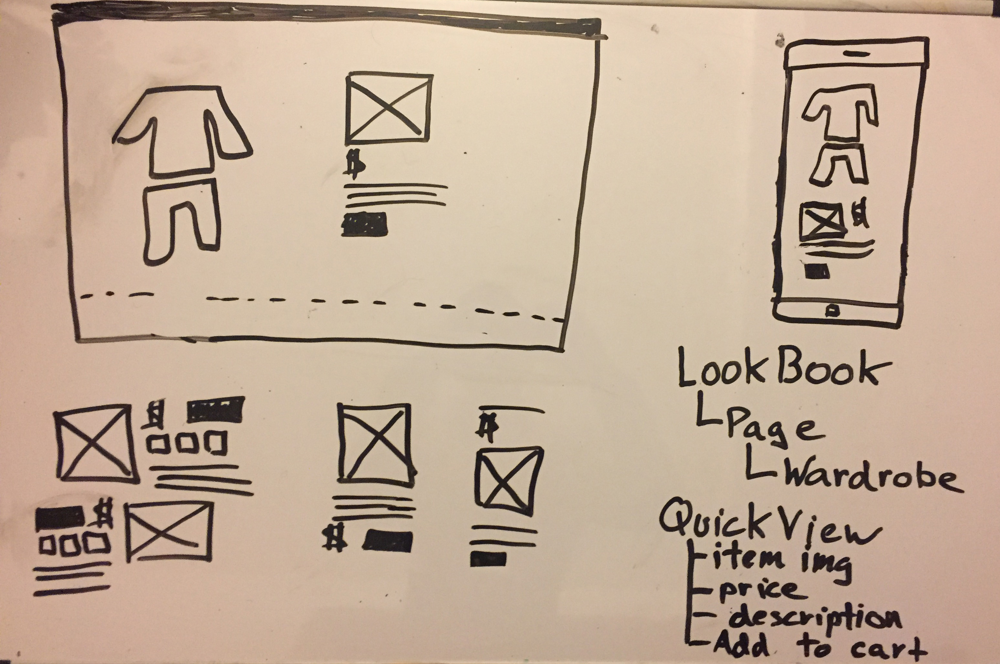
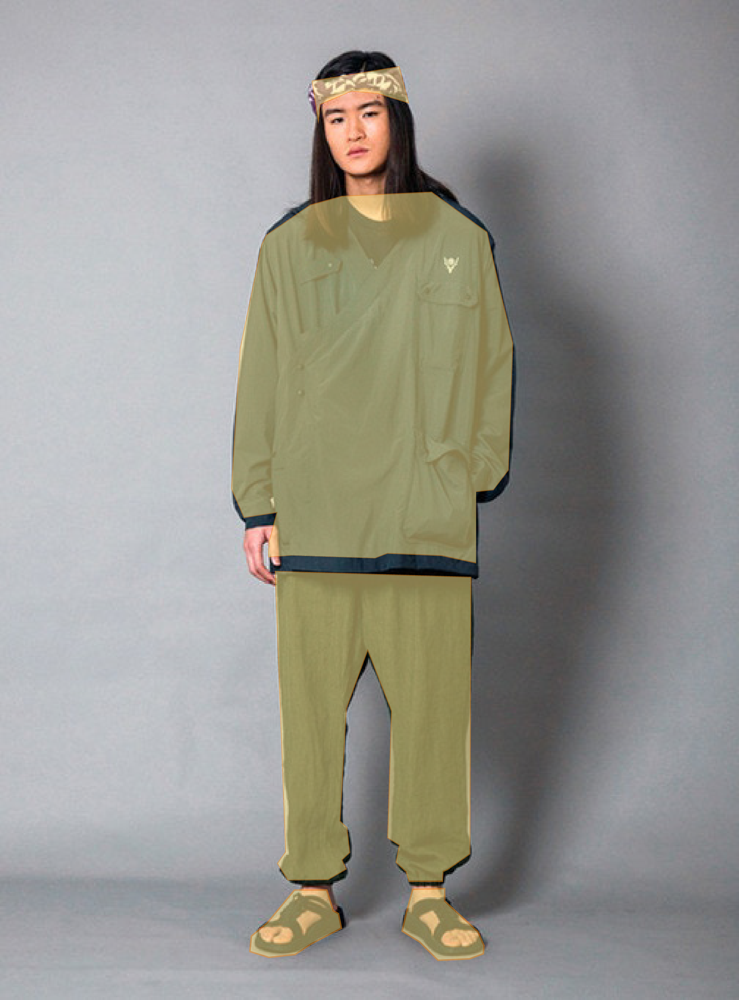
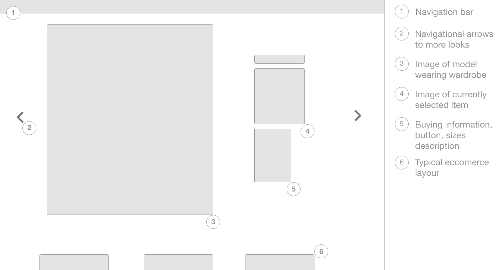
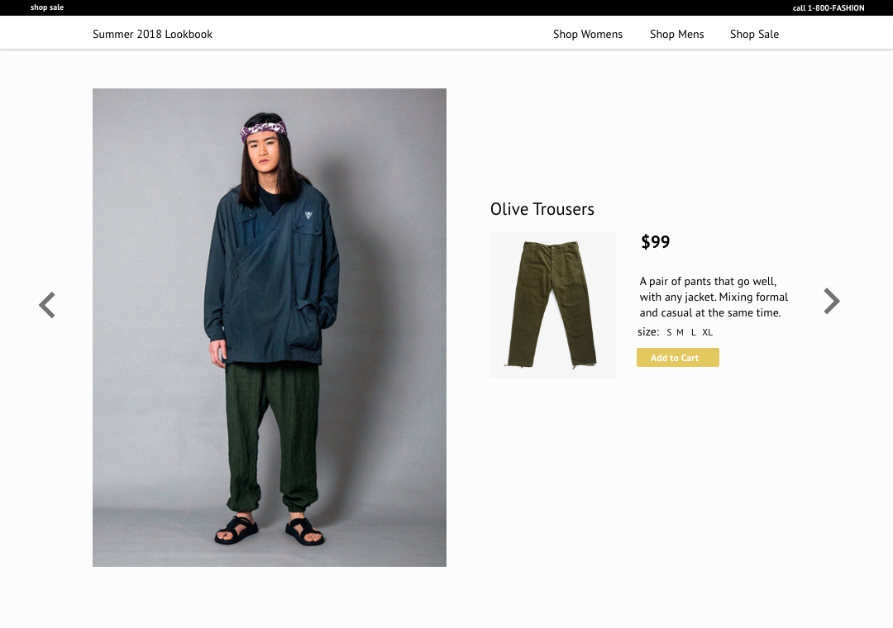
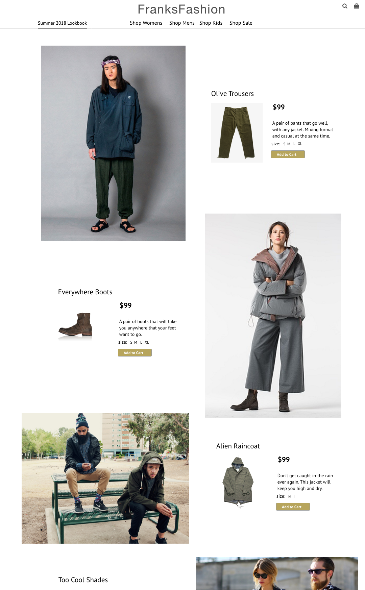

In a discussion with a friend, I generated this idea as a new way to interact with ecommerce websites. In short, the idea is an interactable fashion lookup where a user can hover over an article of clothing and see it appear on the side.
When I attempted to communicate the idea, I became unsure of how effective the interaction might be. It seemed like a good idea in my head but without actually doing it I was unsure how intuitive and effective it would be.
I decided to rapid prototype the idea to quickly get an understanding of the idea.
The process began by creating quick sketch wireframes. I labeled how the page would work together and identified the minimum components the prototype would need to communicate the design idea.
I selected a single "wardrobe" page and a "quick view" component to prototype using the following tools:
Using Adobe Illustrator, I outlined articles of clothes and than exported the file to SVG code.
Inserting the SVG code generated in Illustrator, I used D3.js to add event handling and styling to the svg objects.
Next, I progmatically generated the "Quick View Box" using jQuery.
The overall goal of the prototype was to get a quick idea of how interaction might work. View it below.
To use the prototype please visit this page on a desktop. The prototype was meant for a desktop experience. but as you will see below a mobile mockup with a similar type of interaction was mockedup as well.
I tested it with a few test users and the result were promising! I found users felt familiar with the prototype and even found a few users were able to identify the need of such a UI within fashon lookbooks.
With the feedback gathered in the test, I used Adobe XD to rapidly iterate designs.
I next created a series of wireframes and high fidelity mockups to further articulate my design idea.
  My plan is to develop a final proof of concept using React and D3. To do this the prototype will be composed of the following components, interactions, and animations.